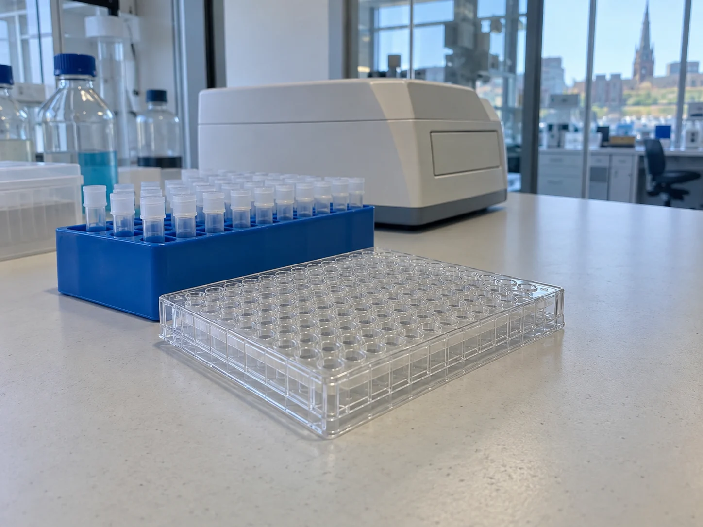

Start with assumptions.
Make the material, readout and intended decision explicit before a study is agreed.
Research assay services / Cambridge, MA
Feasibility, method-transfer support and small research batches. We help early-stage biotech teams make the question, the work and the limits clear.
Find your starting point
Choose by the work ahead
A first observation, an existing method or a batch ready to be discussed. Start with what you have, then see what the handover includes.
A small feasibility study around one plate-based research readout.
02A documented comparison between the method you have and the handover you need.
03A bounded set of research items, run against a method already agreed for the project.
Inside the handover
A report should let your team follow what happened. Explore eight synthetic records, inspect the three readings behind each mean and export the exact view you see.
Open the example reportArbitrary instrument-response units. Illustration of a reporting structure, not a scientific finding.
Inspect the source values ↗
Scientist to scientist
Our 26-person team brings assay work, data documentation and project coordination into a small, staged engagement. Scope first. Review the evidence. Decide the next piece of work together.
Meet the way we work ↗Make the material, readout and intended decision explicit before a study is agreed.
Link calculations to the records that produced them, with versions and exceptions.
A question still open is part of the handover, not a detail to hide.
Start with the question
Set out the purpose, the material and what is already known. Build a useful outline for a scope conversation.